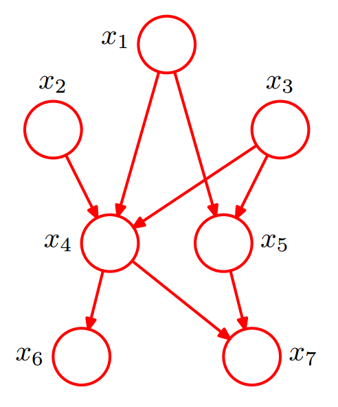
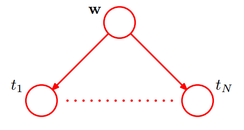
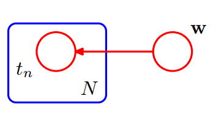
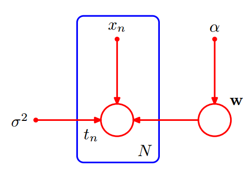
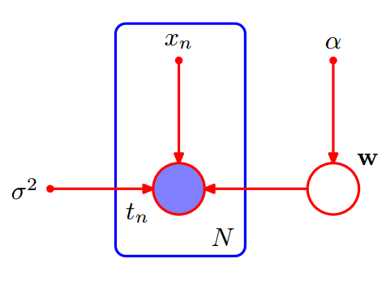
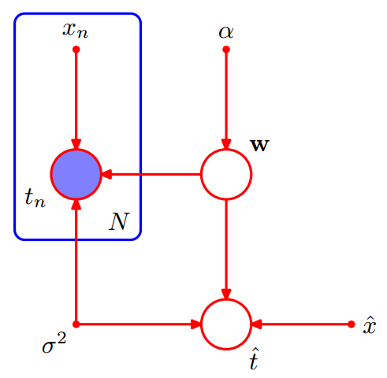

概述
概率在现代机器学习模型中起着重要的作用。然而我们会发现，使用概率分布的图形表示进行分析很有好处。这种概率分布的图形表示被称为概率图模型（probabilistic graphical models）。概率模型的这中图形表示有如下性质：
- 它们提供了一种简单的方式将概率模型的结构可视化，可以用于设计新的模型。
- 通过观察图形，我们可以更深刻地认识模型的性质，如条件独立性。
- 在复杂模型中，复杂的计算可以表示称为图的操作。（这些图的操作实际上代表了复杂的数据表达式的推导）
一个图有两部分组成节点（nodes）和连接（links）。其中节点表示模型中的变量，连接表示节点之间的关系。根据连接是否具有方向性可以将概率图模型分为两类：
- 贝叶斯网(Bayesian Networks)： 连接具有方向，用箭头表示方向，连接的方向也表示了变量之间的条件关系，如A–>B对应条件概率$p(B|A)$。贝叶斯网也称为有向图模型(directed graphical models)。有向图对于表达随机变量之间的因果关系很有用。
- 马尔科夫随机场(Markov random fields)： 连接无方向性，也称为无向图模型(undirected graphical models)。无向图对于表示随机变量之间的软限制比较有用。
为了求解推断问题，通常比较方便的做法是把有向图和无向图都转化为一个不同的表示形式，被称为因子图(factor graph)。
本文讨论有贝叶斯网。
贝叶斯网络是贝叶斯方法的扩展。它描述的是贝叶斯模型，比如贝叶斯线性回归模型，贝叶斯逻辑回归模型。
数学表达式与图的对应
如上文所述，图模型将数学表达式与图对应起来，从而提供了一种简单的方式将概率模型的结构可视化。
在有向图模型中是怎样将复杂的概率表达式和图对应起来的？
直接举例如下：

根据上图可以直接将所有随机变量的联合概率分布分解为下式的右边，多个因子的乘积。
$$
p(x_1,x_2,x_3,x_4,x_5,x_6,x_7) = p(x_1)p(x_2)p(x3)p(x_4|x_1,x_2,x_3)p(x_5|x_1,x_3)p(x_6|x_4)p(x_7|x_4,x_5)
$$
具体理论请见PRML 8.1。
对于有$K$个节点的图，这$K$个节点的联合分布可以表示为：
$$
p(\mathbf X) = \prod_{k=1}^K p(x_k|pa_k)
$$
其中$pa_k$是节点$x_k$的所有父节点的集合，$\mathbf XS = \{ x_1, \dots x_K\}$ 。
贝叶斯网络这的图必须是有向无环图。
贝叶斯回归的图模型
先回顾一下贝叶斯回归。
假设训练集有N个样本，样本集的特征用$\mathrm X$表示，$x_i$表示第$i$个样本。样本集的lable值用$\mathrm T$表示，$t_i$表示第$i$个样本的lable值。即 $\mathbf{X}\equiv (x_{1} \dots x_{N})^{\mathrm{T}}$，$\mathrm{T}=\{t_{1} \dots t_{N} \}^{\mathrm{T}}$ ，样本集表示为$\mathcal D = \{\mathrm X, \mathrm{T} \}$ 。 基于该数据集训练一个回归模型$y(x;\mathrm w)$ ，使用该模型根据新数据的特征预测其lable值。
线性回归：$y(x ,\mathrm w) = \mathrm w ^{\mathrm T} x $
在回归问题中，认为lable值$t$服从均值为$y(x,\mathrm w)$，方差为$\beta^{-1}$的高斯分布。
$$
p(t|x,\mathrm w, \beta)=\mathcal N(t|y(x , \mathrm w),\beta^{-1})
$$
$\beta$为高斯噪声，反应的是样本集的采样误差即噪声。
贝叶斯学派认为模型中的参数$\mathrm w$是一个不确定的值，使用概率分布对其进行建模。此处我们假设$\mathrm{w}$的是服从均值为$0$方差为${\alpha }^{-1}\mathbf{I}$的高斯分布(也可以进行其他假设，其他情况可参考贝叶斯线性回归与贝叶斯逻辑回归)。
$$
p(\mathrm{w}|\alpha )= \mathcal{N}(\mathrm{w}|0,{\alpha }^{-1}\mathbf{I})=(\frac{\alpha }{2\pi })^{(M +1)/2} \exp \{-\frac{\alpha }{2}\mathrm{w}^{\mathrm{T}}\mathrm{w}\}
$$
总结一下上面涉及到到符号：
| 符号 | 含义 |
|---|---|
| $x$ or $x_i$ | 一个样本的特征 |
| $\mathbf X$ | 样本集的特征 |
| $t$ or $t_i$ | 一个样本的lable |
| $\mathrm T$ | 样本集的lable |
| $\mathbf w$ | 模型的参数 |
| $\beta$ | 样本记得噪声 |
| $\alpha$ | $\mathbf w$所服从分布的参数 |
贝叶斯网络考虑的主要是随机变量。与之等价的是所有随机变量的联合分布那么在贝叶斯模型中的随机变量有哪些呢？
在模型训练阶段只有$\mathbf w$和$\mathrm T =(t_1,…,t_N)$是随机变量， $\mathbf{X}= (x_{1} \dots x_{N})^{\mathrm{T}}$， $\beta$ 和$\alpha$被称为deterministic parameters，他们是模型的（超）参数而不是随机变量。
随机变量的贝叶斯网
所有随机变量的联合分布可以表示为：
$$
p(\mathrm T, \mathbf w)=p(\mathbf w)\prod _{n=1}^{N}p(t_n|\mathbf{w})
$$
注意，每一个样本中的lable $t$ 都是联合分布中的一个元素，也是图模型的一个节点。使用圆圈表示随机变量，其图模型表示为如下如所示。

可以看到上图中需要显示重复表示$N$个$t$节点，太复杂了。对于重复的节点可以改成下图的表示方法。使用一个方框(box)表示重复节点，其中右下角的$N$ 表示重复次数。

增加模型参数
有时候显示的表达出模型的参数，对于问题的分析是有帮助的。包含模型参数的随机变量的联合分布表示如下。
$$
p(\mathrm T, \mathbf w | \mathbf{X},\alpha ,\beta)=p(\mathbf w|\alpha )\prod _{n=1}^Np(t_n|\mathbf w,x_n,\beta)
$$
在图模型中，模型参数表示为实心小圆点。

observed variables
在模型训练过程中，所有的随机变量 $\mathrm T =(t_1,…,t_N)$ 对于模型来说都是已知的，即观测到的变量(observed variables)。 相应的，$\mathbf w$ 是未被观测到的，称为隐变量(latent variable)。
在贝叶斯网中，观测到的变量使用实心圆圈表示，隐变量使用空心圆圈表示。如下图所示：

增加预测变量
我们的最终目标是对新输入的变量进行预测。假设给定一个输如值$\hat x$，我们想找到以观测数据为条件的对应的$\hat t$的概率分布。描述这个问题的图模型如下图所示：

这个模型的所有随机变量的联合分布为:
$$
p(\hat t, \mathrm T, \mathbf w | \mathbf{X},\alpha ,\beta)=\{\prod _{n=1}^Np(t_n|\mathbf w,x_n,\beta)\}p(\mathbf w|\alpha )p(\hat t|\hat x, \mathbf w,\beta)
$$
总结
使用圆圈表示随机变量；
观测到的变量使用实心圆圈表示，隐变量使用空心圆圈表示；
使用一个方框(box)表示重复节点，其中右下角的$N$ 表示重复次数；
模型参数表示为实心小圆点，连随机变量的联合分布中是条件变量部分，如$p(\mathrm T, \mathbf w | \mathbf{X},\alpha ,\beta)$；
参数的后验分布
对于训练数据来书，所有随机变量的联合分布表示如下：
$$
p(\mathrm T, \mathbf w | \mathbf{X},\alpha ,\beta)=p(\mathbf w|\alpha )\prod _{n=1}^Np(t_n|\mathbf w,x_n,\beta)
$$
根据贝叶斯公式有参数$\mathbf w$的后验分布：
$$
p( \mathbf w |\mathrm T, \mathbf{X},\alpha ,\beta) = \frac {p(\mathrm T, \mathbf w | \mathbf{X},\alpha ,\beta)}{p(\mathrm T|\mathbf{X},\alpha ,\beta)}
$$
其中$\mathrm T$是观察到的变量，$p(\mathrm T|\mathbf{X},\alpha ,\beta)$ 是一个常数，所以：
$$
p( \mathbf w |\mathrm T, \mathbf{X},\alpha ,\beta) \propto p(\mathrm T, \mathbf w | \mathbf{X},\alpha ,\beta) = p(\mathbf w|\alpha )\prod _{n=1}^Np(t_n|\mathbf w,x_n,\beta)
$$
预测分布
由公式
$$
p(\hat t, \mathrm T, \mathbf w | \mathbf{X},\alpha ,\beta)=\{\prod _{n=1}^Np(t_n|\mathbf w,x_n,\beta)\}p(\mathbf w|\alpha )p(\hat t|\hat x, \mathbf w,\beta)
$$
对于新数据$\hat t$在给定训练数据集$\{\mathbf{X},\mathrm T\}$时的预测分布
$$
p(\hat t | \mathbf{X},\mathrm T, \alpha ,\beta) = \frac {p(\hat t, \mathrm T | \mathbf{X},\alpha ,\beta)}{p(\mathrm T|\mathbf{X},\alpha ,\beta)}
$$
其中$\mathrm T$是观察到的变量，$p(\mathrm T|\mathbf{X},\alpha ,\beta)$ 是一个常数，所以：
$$
p(\hat t | \mathbf{X},\mathrm T, \alpha ,\beta) \propto p(\hat t, \mathrm T | \mathbf{X},\alpha ,\beta) = \int p(\hat t, \mathrm T, \mathbf w | \mathbf{X},\alpha ,\beta) d{\mathbf w}
$$
参考资料
Pattern Recognition and Machine Learning